Premiers Feux
Projet d’identité visuelle pour l’exposition des diplômé·e·s 2026 de l’Ensad Nancy. Le feu de circulation, évoqué par des ponctuations graphiques, construit la base de l’identité et se juxtapose avec une iconographie de paysages routiers. L’identité ne cherche pas à véhiculer une vision compétitive de ce moment, mais plutôt à ouvrir une multitude d’horizons et de trajectoires possibles, incarnée par les photographies de paysages routiers.
Visual identity project for the 2026 Ensad Nancy's graduation exhibition. The traffic light, evoked through graphic punctuations, forms the foundation of the identity and is juxtaposed with imagery of road landscapes. The identity does not seek to convey a competitive vision of this moment, but rather to open up a multitude of possible horizons and trajectories, embodied by the photographs of road landscapes.
Le motif de l’étincelle, tournoyant comme un feu d’artifice, se décline sur l’ensemble de l’identité. Une spirale envoûtante, symbole d’une ascension, varie selon les supports : chaque carte de visite, cartel, livret en possède une qui lui est propre. Les projets de diplômes présentés deviennent ainsi une multitude de vœux exaucés, de sorts jetés, de rêveries devenues réalité.
The spark motif, swirling like a firework, unfolds across the entire identity. A mesmerizing spiral, symbolizing an ascension, varies depending on the medium: each business card, museum label, and booklet has its very own. The presented graduation projects thus become a multitude of granted wishes, cast spells, and daydreams turned into reality.
2026
affiches posters A3
cartels A4
livret booklet A4
cartes de visite calling cards 8,5 × 5,5 cm
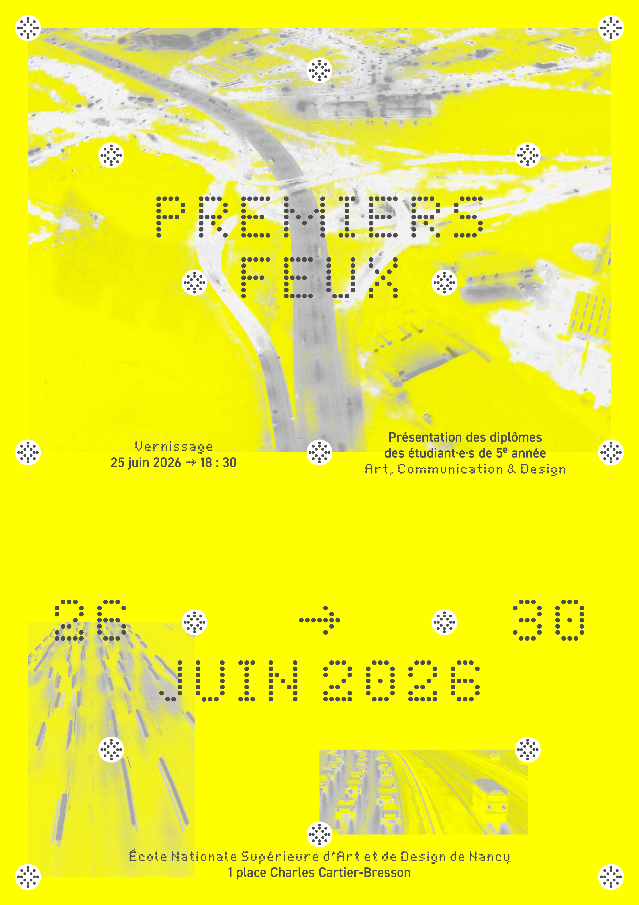


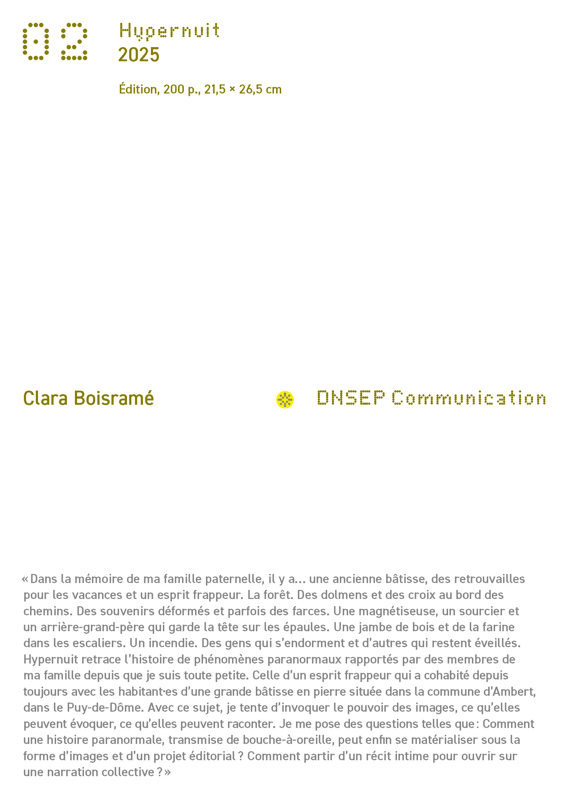
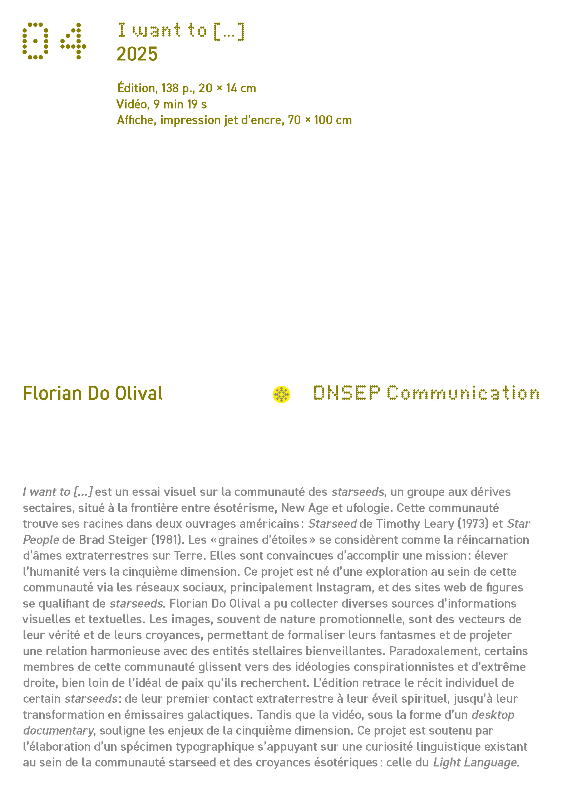
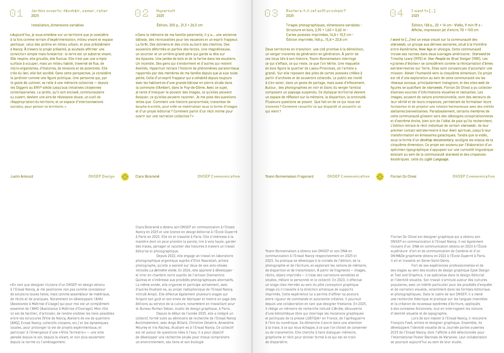
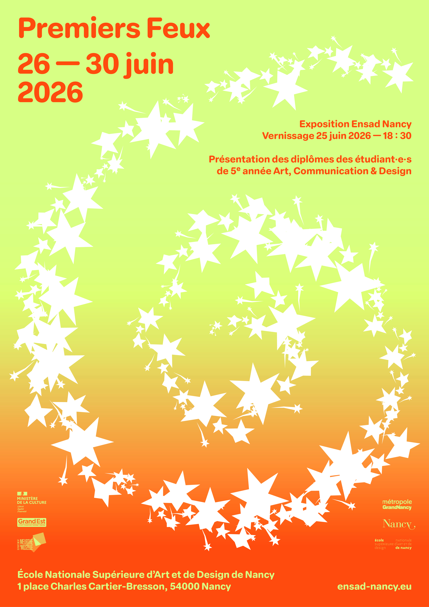
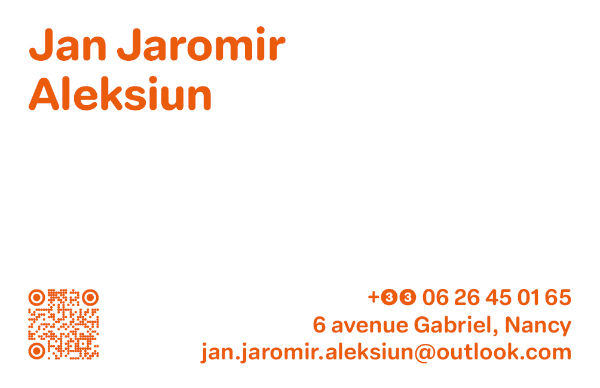
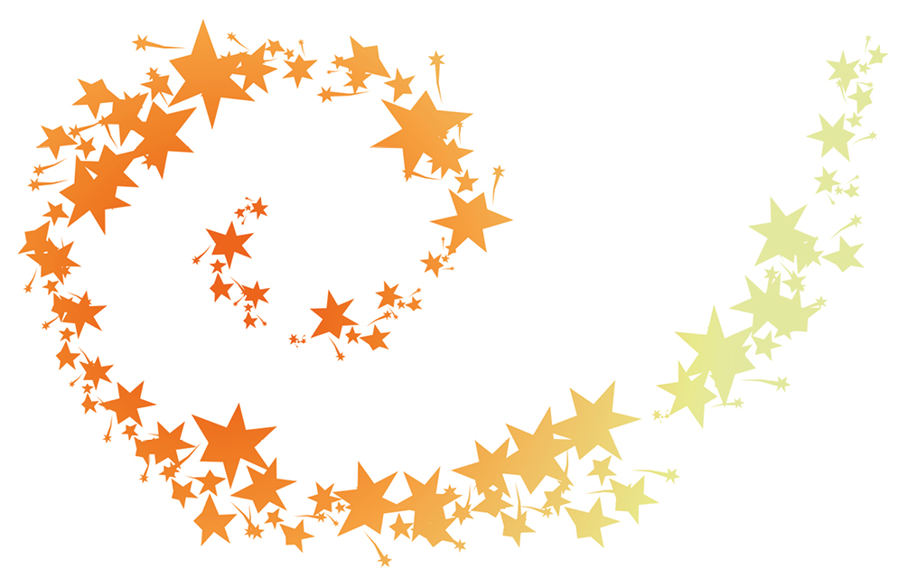
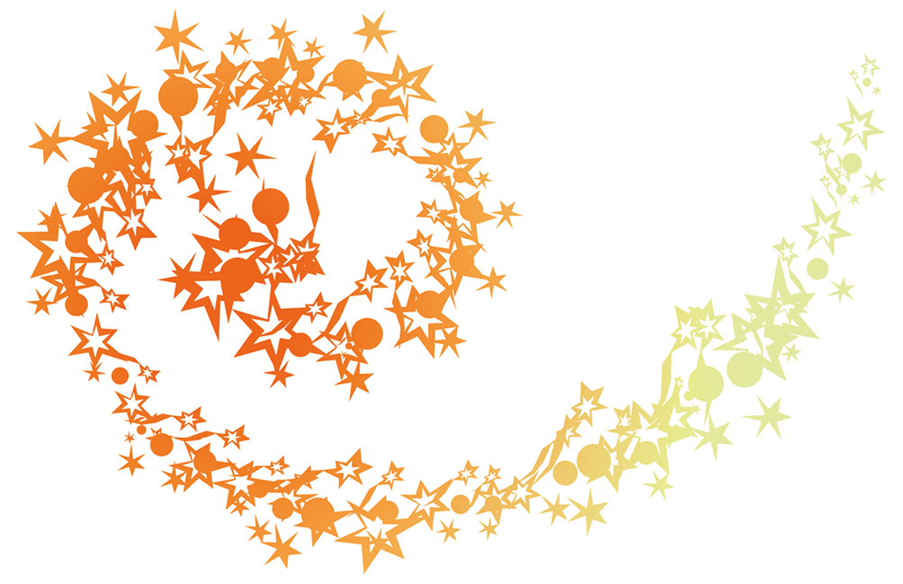
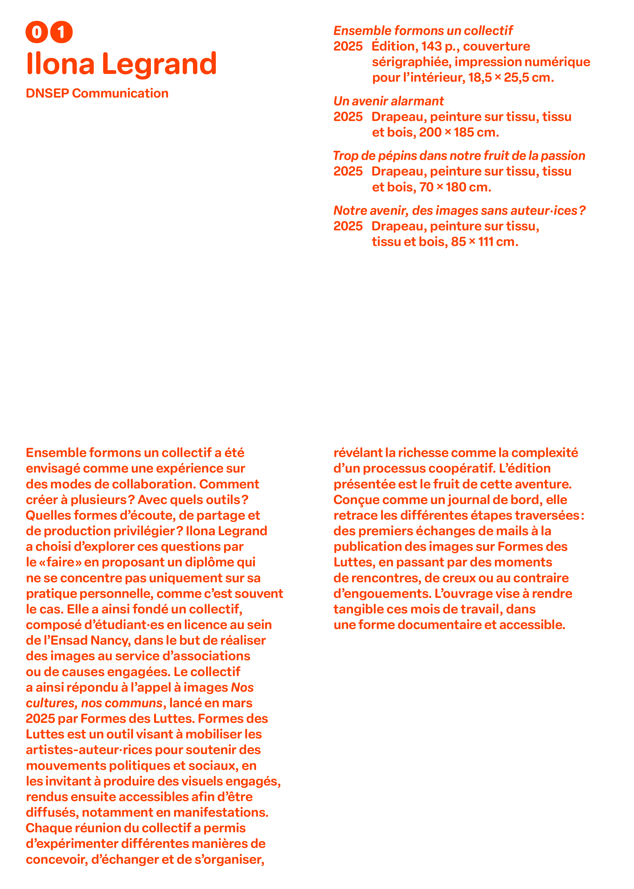
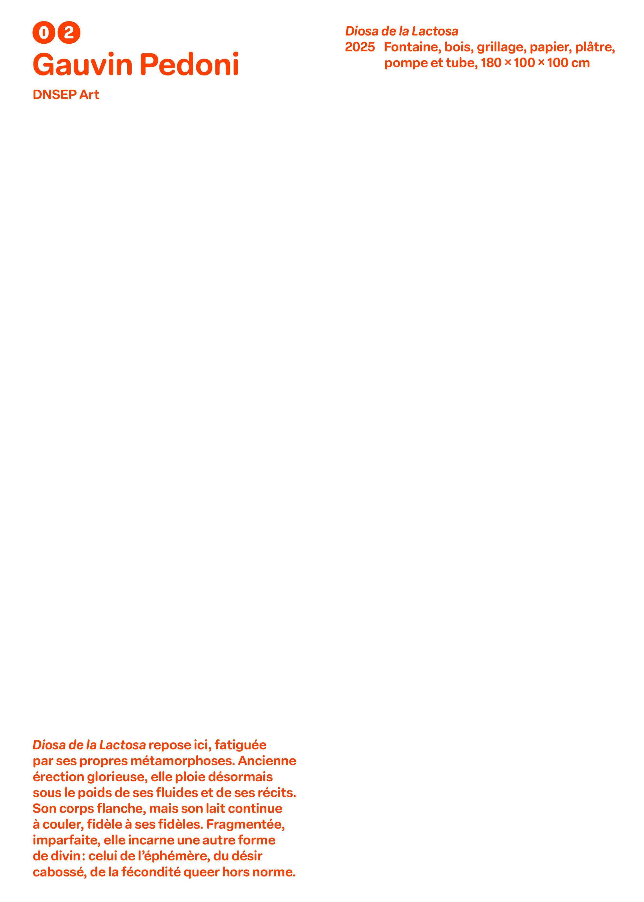
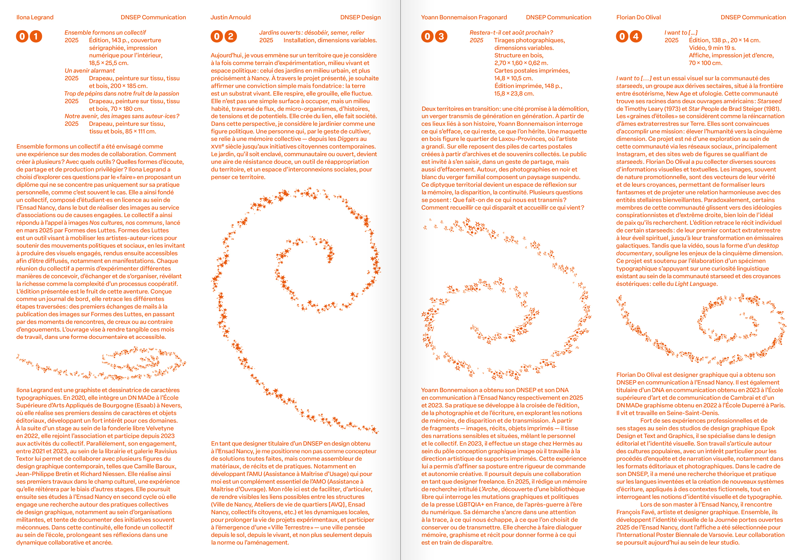